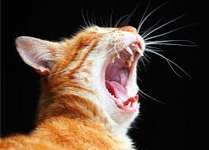

Raças de Gatos
Existem muitas raças de gatos com características únicas. Aqui estão algumas das raças mais populares:
- Siamês
- Maine Coon
- Persa
- British Shorthair
- Bengal
- Ragdoll
- Scottish Fold
Existem muitas raças de gatos com características únicas. Aqui estão algumas das raças mais populares: